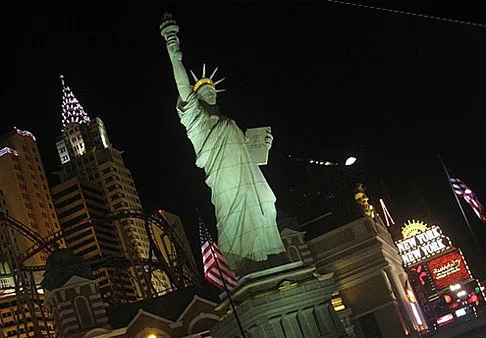
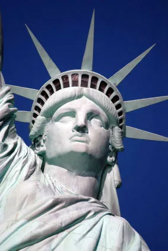
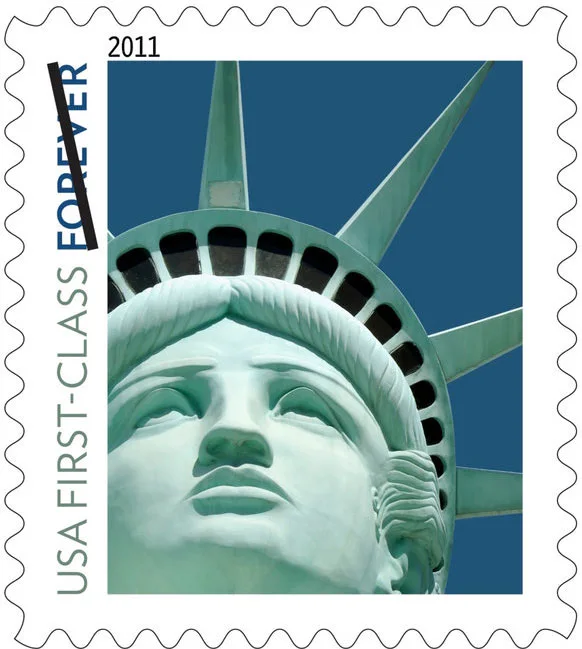
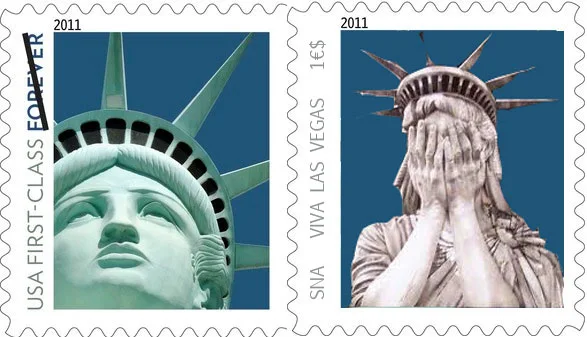
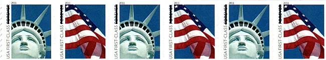
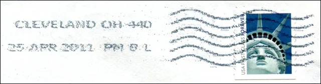
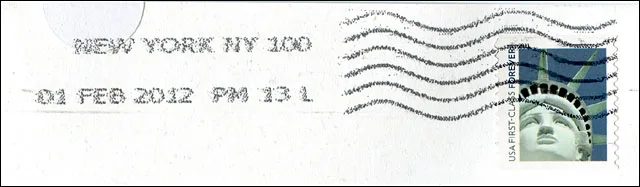

Home / Countries / The Statue of Liberty on the 2010 US Stamp
The Statue of Liberty on the 2010 US Stamp
From the original Art on Stamps archive

This is a page that is inspired by my recent postings and conversations on the RCSD newsgroup.
The Lady Liberty forever coil stamp, issued on Dec.1, 2010, doesn't show the monument in New York Harbor as one would expect but its replica which stands outside a casino in Las Vegas.
The USPS press release (of Dec. 9, 2010) states: "The statue, located on Liberty Island in New York Harbor, was designed by French sculptor Frederic-Auguste Bartholdi."

Isn't it strange? After replica watches, handbags, purses, etc., we got a replica stamp that, unlike other products, has the competitive advantage of being "FIRST-CLASS" & "FOREVER". (April, 11, 2011)
Later the news hit the mainstream media and I posted some further excerpts/comments on RCSD.
“We still love the stamp design and would have selected this photograph anyway,” said Roy Betts, a spokesman. Mr. Betts did say, however, that the post office regrets the error and is “re-examining our processes to prevent this situation from happening in the future.” ... Meanwhile, back in the real New York, Edward I. Koch, who declared that the city was the center of the universe when he was mayor, offered some insight into what it all means: “It simply means the post office is doing a stupid thing.” " Source
" "There's no error on the stamp, so we're not recalling them," Betts said.
And we'll be living with the faux Lady Liberty stamp for a long, long time. Yup, they're "forever" stamps. " Source

Please notice the facial expression (childishly upset?) of the Las Vegas replica and compare it with the stamp below, of which USPS printed no less then 3 billions pieces. For such a monumental stamp, that symbolizes a fundamental individual right, no image is big enough...

In the year 2011 the well known SNA Postal Office (SNAPO) brought to our attention a joint issue USA - SNA. The print run was of one pair only. This unique philatelic jewel is preserved at the SNAPM (SNA Postal Museum), Ciudad de Leon, SNA.

Viva Las Vegas turnin' day into nighttime Turnin' night into daytime If you see it once You'll never be the same again (Artist: Elvis Presley. Words and music: Mort Shuman & Doc Pomus)
Being physically present in US, I prepared a self-addressed envelope and I wanted to:
- buy a stamp or a few more at the Post Office - put the Lady Liberty on the mentioned envelope - send it by regular mail to myself - be happy for having this really circulated art stamp on a cover - show it on a Web page, if the post would cancel it ...
Therefore I asked a lady at a PO to sell me a Lady Liberty stamp or eventually the both designs. She told me that she can sell me a roll (of 50 pairs) only, for a total of $44. I found that it was to much to pay for the 44 cents stamp that I needed. These stamps may be "Forever" but I'm surely not... On the USPS Postal Store site I found the same offer only.
Update No 1. Jim let me know on RCSD that I could buy less than a coil from a PO in Rhode Island. I ordered some stamps today, and I was actually lucky that the order was accepted, because the service will close just in a few days from now (April 21, 2011). On April 23 (bravo, USPS!) I received my strip of ten stamps. Here is a strip of six that I cut out from it (more is shown, uncensored, in the background):

I display below the image of a really used stamp, affixed to its envelope. Another nice souvenir of my passage at Shaker Heights / Cleveland; thanks and good bye!

Update No 2. No end in sight - 1 After an ATM stamp pane of 18 (April 8, NYC) and coil stamps of the design shown above (Dec. 1, 2010 Washington, D.C.), a new issue of the replica and the flag will appear in booklet form on Sept. 14, 2011, as a double sided pane of 20 self-adhesive stamps. They will be printed by Ashter Potter, Avery Dennisson and Sennett Security Products, the issue quantity being of 750 million stamp each printer. The Lady Liberty photo was taken by Raimund Linke, a German photographer. It shows a replica of the Statue of Liberty at the New York New York Hotel and Casino in Las Vegas, Nevada. Source: Linn's Stamp News online. Errare humanum est, perseverare diabolicum.
After another ten months the infamous stamp is still in use. It has got a yellowish tint (not yelow enough on the scan):

From the initial reactions of the USPS officials it was obvious that they weren't disturbed by their stupid error (see my page).
Two months ago I lived for several weeks in the Lower Manhattan (yes, the one that had some problems with Irene storm) and I was very impressed by how many people from the whole world embarked to visit the Lady Liberty statue.
The substitution, on an official US stamps, of the universal symbol of Liberty by a bad copy of it is a shame per se. The deliberate reissue, in a form on another, of a casino statue in place of a worldwide renown and a highly regarded work of art is a mockery. I hope that sooner or later the tide of changes will sweep away some excessive and careless USPS bureaucracy.
- Bravo Victor and SNAPO (Blair) - Those are both great pages, Victor! (Bill) - Very well done. ... Maybe I'll put together a nice display of stamps that picture Lady Liberty of the Harbor (Beanie) - Excellent job on those pages (Alyn) - Thanks for this update : thus I re-visited your excellent page. Bravo ! Apparently, the USPS is going to "diabolically perseverate" ... forever (Pierre)
Las Vegas sculptor Robert Davidson was awarded last week $3.5 million from the Postal Service in a lawsuit. The sculptor discovered the stamp after his wife bought a booklet of them at the post office. In January 2012, she filed a copyright application on his behalf. His copyright for the Las Vegas statue was issued in November 2013, and he sued the Postal Service that month for using it on the stamp. According to testimony, Davidson made his version of Lady Liberty distinctly different from the copper statue designed by French sculptor Frédéric Auguste Bartholi. In a statement, U.S.P.S. representatives said, "We are reviewing the decision and will comment if and when appropriate." Source . I suppose that it will never be appropiate...